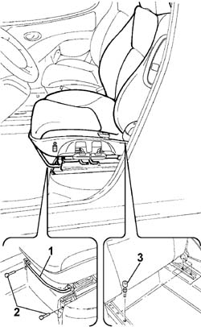
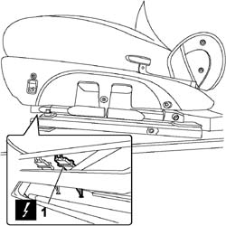
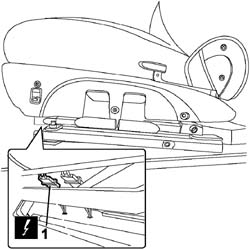

7045A13 front seat with side bag r r
- Path
- Procedures > 70 FITTINGS > 7045 FRONT SEATS > 7045A front seat assembly > 7045A13 front seat with side bag r r
- Kind
- repair procedure (removal / refitting; the operation number is the code)
- Applies to
- engines: 1.4 8v, 1.6 16v, 1.3 JTD 16V, 1.9 JTD 8V; all production periods
- Interactive page
- https://sloeber94.github.io/elrnDB-fDbl/en/#/2585163
Applies to: engines: 1.4 8v, 1.6 16v, 1.3 JTD 16V, 1.9 JTD 8V; all production periods; only with equipment: 7 seater
 Removing
Removing
 Refitting
RefittingEnsure that the ignition key is in the OFF position, then disconnect the negative battery terminal.
 | Name | Connector |
|---|---|---|
- | Battery |
1. Adjust the special lever and move the seat backwards into the end of travel position.
2. Undo the bolts fixing the front of the seat.
Always using the special lever, move the seat forwards into the end of travel position.
3. Undo the rear fixing bolts.

Applies to: engines: 1.4 8v, 1.6 16v, 1.3 JTD 16V, 1.9 JTD 8V; all production periods; only with equipment: 7 seater
1. Working on the front lower part of the driver's seat, disconnect the seat heating connector.
| Name | Connector |
|---|---|---|
1 | Data not available yet |

Applies to: engines: 1.4 8v, 1.6 16v, 1.3 JTD 16V, 1.9 JTD 8V; all production periods; only with equipment: 7 seater
1. Disconnect the side bag connector and remove the front seat.
Name | Connector | |
|---|---|---|
1 | Driver's Side Bag/rear coupling |
Name | Connector | |
|---|---|---|
1 | Rear passenger Side- Bag coupling/ |

Applies to: engines: 1.4 8v, 1.6 16v, 1.3 JTD 16V, 1.9 JTD 8V; all production periods; only with equipment: 7 seater
Refitting
RemovingCheck that the seat is not damaged.
Place the front seat in position and connect the electrical connections.
Fit the seat and tighten the front and rear fixing bolts to torque.
 | Fastening | Component | Ø | Value (daNm) |
|---|---|---|---|---|
- | Bolt | FRONT SEAT ASSEMBLY. | M8 | 2.4 |
Connect the battery negative terminal.
| Name | Connector |
|---|---|---|
- | Battery |